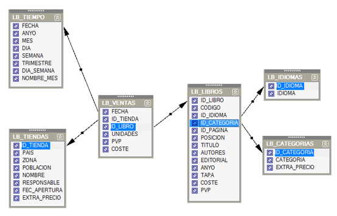
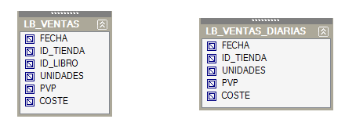
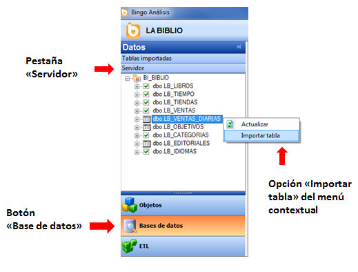
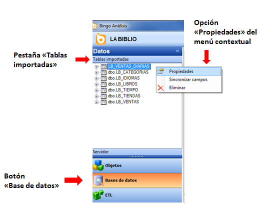
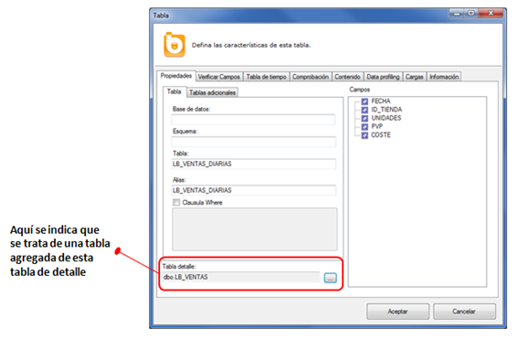
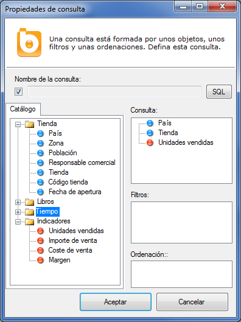
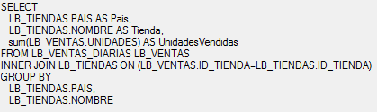
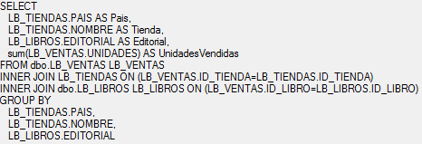

Necesidad de las tablas agregadas
Las tablas agregadas sirven para mejorar los tiempos de respuesta de las consultas.
Existen muchos factores que influyen en el rendimiento de las consultas. Para obtener un buen rendimiento es necesario, entre otras cosas, un buen diseño del modelo de datos y la creación de índices sobre aquellos campos muy selectivos que se filtran habitualmente. Sin embargo, este tipo de técnicas no son suficientes cuando se trabaja con bases de datos con muchos millones de registros y se requiere unos tiempos de respuesta reducidos.
Inevitablemente, al aumentar el número de registros que contienen las tablas se penaliza el tiempo requerido para resolver las consultas. Cuando las tablas son grandes, el gestor de base de datos debe leer millones de registros para seleccionar unos pocos y finalmente agruparlos.
Para evitar estas situaciones, el diseñador de la base de datos puede preparar tablas agregadas que contienen la misma información que las tablas detalladas, pero con menor nivel de detalle y con los datos ya sumarizados.
En la base de datos de LA BIBLIO, por ejemplo, la tabla de ventas tiene varios millones de registros.

La tabla de ventas de este catálogo contiene todas las ventas, de todas las tiendas, de todos los libros, día a día. Sin embargo, los responsables comerciales que utilizan Bingo Análisis para acceder a su información corporativa no suelen necesitar tanto nivel de detalle. Habitualmente, consultan los totales de ventas de sus tiendas, por meses, por semanas, o por fechas. Y raramente consultan el detalle de los libros.
¿No se podría aprovechar esta circunstancia para mejorar el rendimiento de estas consultas habituales? Sí. En el catálogo de Bingo Intelligence se pueden incluir las tablas agregadas, y el generador de consultas SQL las utilizará cuando sea posible.
Crear una tabla agregada
Bingo Intelligence no crea las tablas agregadas. Es responsabilidad del diseñador de la base de datos crear y mantener las tablas agregadas que sean necesarias, e incluirlas en catálogo.
Para crear la tabla agregada se deben tener en cuenta estas consideraciones:
- Sólo se deben crear aquellas tablas agregadas que sean necesarias. Una tabla agregada es un objeto más a mantener, por lo que sólo se debería crear si permite mejorar el rendimiento de un número significativo de consultas.
- El nombre de los campos de la tabla agregada debe coincidir con el nombre de los campos equivalentes de la tabla detallada.
Bingo Intelligence utilizará la tabla agregada cuando todos los campos de la tabla detallada que se mencionan en una consulta SQL aparecen también en la tabla agregada. En caso de que existan varias tablas agregadas que cumplan esta condición, se seleccionará aquella que tenga un menor número de registros.
En la base de datos de ejemplo, la tabla LB_VENTAS_DIARIAS es una tabla agregada de LB_VENTAS:

Como se ve en la imagen, la tabla “Ventas diarias” tiene los mismos campos que la tabla de “Ventas”, excepto el campo “ID_LIBRO”. La tabla detallada tiene varios millones de registros, mientras que la tabla agregada tiene varias decenas de miles... Evidentemente, las consultas contra LB_VENTAS_DIARIAS irán significativamente más rápidas.
Incluir la tabla agregada en el catálogo
Para que Bingo Intelligence haga uso de la tabla agregada es necesario importarla en el catálogo, e indicarle que se trata de una tabla agregada.
Para importar la tabla agregada se tiene que ir al panel de navegación de Bases de datos, y seleccionar la opción “Importar tabla” del menú contextual (botón derecho).

Al importar una tabla no se añade automáticamente en el diagrama de tablas. Para definir una tabla agregada, no es necesario que ésta aparezca en el diagrama. Es suficiente que esté importada en el catálogo y que Bingo Intelligence conozca su estructura.
Para indicar que se trata de una tabla agregada es necesario modificar sus propiedades. Para ello, se ha de desplegar la pestaña de “Tablas importadas”, y abrir sus “Propiedades”:

En el formulario de propiedades se tiene que indicar que esta tabla es una tabla agregada de la tabla de detalle denominada “LB_VENTAS”:

Resumiendo, para que Bingo Intelligence utilice las tablas agregadas sólo es necesario:
- Importar la tabla agregada
- En sus propiedades, indicar cuál es la tabla de detalle que resume
En concreto, no es necesario modificar el diagrama de tablas, ni la definición de ningún indicador, ni las propiedades de la tabla de detalle.
Verificación de la configuración de la tabla agregada
Es recomendable verificar que la configuración se ha realizado correctamente y que Bingo Intelligence utilizará la tabla agregada cuando se posible.
Para ello, se puede utilizar el “Probador de consultas SQL” para definir esta consulta:

Con el botón “SQL” se puede verificar la sentencia:

Efectivamente, se observa que se ha incluido la tabla “LB_VENTAS_DIARIAS” (y que en esta sentencia tiene el alias de “LB_VENTAS”).
Para terminar la verificación, se puede incluir la “Editorial” en la consulta, por lo que ya no será posible utilizar la tabla agregada, y la consulta generada será:

De esta manera, los usuarios podrán utilizar las tablas agregadas de un modo transparente, y siempre obtendrán el resultado correcto, y de la manera más eficiente posible.